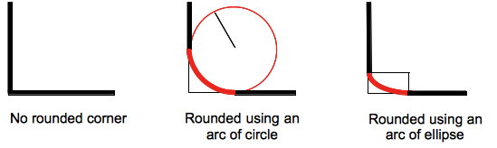
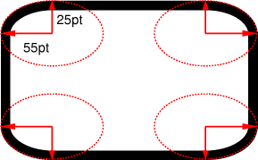
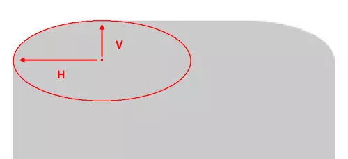

Khi sử dụng ESLint trong một dự án React, kiểu gì bạn cũng sẽ gặp tình huống mà bạn cho là vớ vẩn như sau: Bạn có một đoạn code xài useEffect, trong đó bạn gọi một function, thường thì function này được tạo ra ngay trong component hiện tại luôn, ví dụ:
const doSomething = (someValue) => {
// ...do something with someValue...
}
useEffect(() => {
if (someValue) {
doSomething(someValue)
}
}, [someValue])
Và bạn sẽ bị ESLint quăng ngay một câu complain vô mặt:
React Hook useEffect has a missing dependency: ‘doSomething’. Either include it or remove the dependency array
Đây là warning từ plugin eslint-plugin-react-hooks, đại ý của nó là: “Ê sao mày xài hàm doSomething trong useEffect, mà không cho doSomething vào danh sách dependencies?”
“Tào lao hết sức!” – bạn nghĩ. Nó là một cái hàm chứ có phải value quái gì đâu mà phải bỏ vô dependency list???
Vậy đây có phải là bug của eslint-plugin-react-hooks không? Đáng ra chỉ nên áp dụng rule này lên các giá trị thông thường thôi, sao còn áp dụng với cả function?
Lý do là: Function cũng là các object, và trong React (functional component), chúng cũng được khởi tạo lại sau mỗi lần render giống như mọi object khác. Vậy nên, dù function của bạn không đổi, thì trên thực tế sau mỗi lần render, chúng ta đều có một instance mới của cái function đó được tạo ra.Để ví dụ rõ hơn, có thể xem qua trường hợp chúng ta dùng giá trị của một state ở trong function:
const [name, setName] = useState("")
const sayHello = () => {
console.log(`Hello, ${name}`)
}
useEffect(() => {
sayHello()
}, [name])
Ở ví dụ trên, vì name là một state value, nó có thể thay đổi bất cứ lúc nào và khiến cho component bị re-render. Hàm sayHello sử dụng giá trị của name, nên đương nhiên nó là một đối tượng có khả năng thay đổi giống như state. Chính vì thế mà các function cũng được đưa vào diện cần đưa vào dependency list của useEffect.
Rồi, đã hiểu vấn đề, vậy khi gặp tình huống này thì làm sao để fix? Có nhiều cách để giải quyết vấn đề này, tuỳ theo implementation của function cần xử lý.
Nếu function không sử dụng value hay state nào của component hiện tại thì có thể move nó ra khỏi component:
const sayHello = (name: string) => {
console.log("Hello")
}
const Component = () => {
const [name, setName] = useState("")
useEffect(() => {
sayHello(name)
}, [name])
}
Nếu function có sử dụng value hay state thuộc component hiện tại, thì có thể define function này bên trong khối useEffect:
const Component = () => {
const [name, setName] = useState("")
const [age, setAge] = useState("")
useEffect(() => {
const sayHello = () => {
console.log(`I am ${name}, I am ${age} yo`)
}
sayHello()
}, [name, age])
}
Lưu ý là, bạn phải đưa luôn toàn bộ những state mà function đó sử dụng vào dependency list luôn (vì function của bạn phụ thuộc vào những state đó).
Một cách khác là sử dụng useCallback hook để memoize function này sau mỗi lần render, tuỳ thuộc vào giá trị của các state mà function này sử dụng:
const Component = () => {
const sayHello = useCallback(() => {
...
}, [/* danh sách state mà function cần */])
useEffect(() => {
if (age > 0) {
sayHello()
}
}, [age, sayHello])
}
Xài cách này, bạn vẫn phải đưa function này vào danh sách dependency như cách trước, nhưng có sự phân chia trong danh sách dependency rõ ràng hơn.
Thường trong khi đi học về network, chúng ta thường gặp câu hỏi là: trong các trường hợp mình đòi hỏi độ trễ thấp và không quan tâm packet sẽ bị rơi rớt giữa chừng, như video stream hoặc multiplayer game, thì network protocol nào nên sử dụng? Câu trả lời ai cũng có trong đầu là sử dụng UDP.
Tuy nhiên, một điều đáng ngạc nhiên (ít nhất đối với mình) là không có cách thuận tiện nào để gửi một gói tin UDP trên WebBrowser. WebSocket chỉ hỗ trợ giao thức TCP.
Bài viết sẽ trả lời tại sao và chúng ta làm thế nào để sử dụng UDP network protocol trên Browser.
UDP và TCP là khái niệm cơ bản và ai cũng đã từng đọc qua nên mình chỉ nhắc lại nhanh chóng.
UDP (Unreliable Data Protocol):
TCP (Transmission Control Protocol):
HTTP/HTTPS là protocol chủ yếu để thực hiện request và response giữa browser và server. HTTP và HTTPS thường sử dụng port 80 và port 443. Vì là nền tảng mặc định, các ports này thường được Firewall cho phép outbound traffic.
WebSocket thường được dùng để tạo connection 2 chiều giữa client và server với low latency. WebSocket connection được tạo ra bằng bắt đầu bằng HTTP handshake và sau đó được upgrade lên Websocket protocol, tạo ra một full-duplex connection. Bằng cách dựa trên HTTP và các port mặc định của HTTP, WebSocket không yêu cầu mở thêm port cho connection và dễ dàng chấp thuận bởi Firewall. Tuy nhiên, cũng vì dựa trên HTTP, ta cũng phải sử dụng TCP cho Websocket.
UDP là connectionless và thiếu một số tính năng security có sẵn trong HTTPS (TLS). Vì không có connection nên packet nào nhìn cũng như nhau và 3rd party có thể chen vào giữa gửi packet, tạo ra rủi ro “Man In The Middle Attack”. Không có SSL nghĩa là gói tin không được mã hóa. Gói tin có thể bị giả danh hay sửa đổi trong quá trình gửi. UDP cũng không có flow control và congestion control như TCP. Điều này nghĩa là chúng ta không thể kiểm soát được lưu lượng UDP và dễ dẫn đến rủi ro DDoS từ trình duyệt web. Vì vậy, muốn sử dụng UDP trên WebBrowser, chúng ta cần thêm các layer phía trên hỗ trợ gửi UDP một cách an toàn.
WebRTC là một all-in-one protocol tổng hợp các protocol cho tầng transport, network, Video, NAT traverse, và hỗ trợ gửi UDP packet với mục đích then chốt để đạt được real-time p2p communication. Đầu tiên, nó được phát triển để cho ứng dụng Video Call nhưng sau đó hỗ trợ thêm Datagram cho phép gửi đi reliable hoặc unreliable packet.
Cách tiếp cận này cho phép WebRTC có thể gửi và nhận, stream video với độ trễ cực thấp. Khác với các giao thức dựa trên HTTP trên các port 80 và 443, WebRTC cho phép thiết lập peer-to-peer connection giữa bất kỳ thiết bị nào. Thông thường, các kết nối inbound và outbound cần được firewall, router thông qua, và khi di chuyển giữa các hop trong network, địa chỉ ip cũng thay đổi. WebRTC đạt được quyền năng thông qua một cơ chế rất phức tạp gọi là ICE để thực hiện NAT Traverse (vượt tường lửa). Cơ chế này giúp thiết bị tìm public ip và public address mà giữa 2 thiết bị có thể lập connection được. Nói về cơ chế này sẽ còn rất nhiều nhưng ngoài nội dung của bài viết.
Sau khi connection được thiết lập giữa 2 device, WebRTC sẽ cho phép bạn stream media hay gửi UDP datagram thông qua connection này. WebRTC sử dụng DTLS (Datagram TLS) nên UDP datagram dựa trên WebRTC cũng được đảm bảo security.
WebRTC rất ràng buộc về các protocol được phép sử dụng. SCTP, DTLS, RTP, SRTP, ICE và Video Codec (VP8, H264, OPUS). Mỗi cái term này lại là một vùng trời kiến thức đòi hỏi người sử dụng nắm bắt. Vì WebRTC, được thiết kế ban đầu cho Video Call và giao tiếp peer-to-peer, các tính năng liên quan đến NAT Traversal không cần thiết trong mô hình client-server. Về phía server, mình có toàn quyền quyết định network và port setting, không cần WebRTC làm hộ. Khởi tạo connection cũng là một chiều outbound từ client đến server chứ không phải là 2 chiều.
Ngoài ra, bạn cũng không có nhiều khả năng thay đổi cách bạn muốn gửi packet nếu muốn sửa congestion/flow control. WebRTC là một cái blackbox mà nếu nó work thì work và không work thì bạn cũng không biết cách nào khác để làm nó tốt hơn.
WebRTC hiện tại vẫn là cách phổ biến nhất để gửi UDP trong client-server architecture cho các ứng dụng yêu cầu độ trễ thấp như Video Stream, Cloud Gaming, Online Game; dù cho WebRTC hoàn toàn bắt đầu từ một nhu cầu khác. Yêu cầu gửi UDP packet tưởng chừng nghe cơ bản và nền tảng này đang lại trở thành một trở ngại lớn khi phát triển các sản phẩm đòi hỏi low latency ngày nay.
Có một số tiến triển đáng kể để việc sử dụng UDP trên WebBrowser ngày càng khả thi hơn. Chúng ta sẽ dành dịp khác để nói tiếp về nó.
Bonsai. I’m talking about bonsai. Lúc bắt đầu viết thì mình cũng hơi đắn đo không biết là bản thân có đủ qualified để viết về chủ đề này hay không. Nhưng suy cho cùng mục đích của mình ở đây không phải viết một cái comprehensive guide, để khi đọc xong mọi người trở thành bonsai expert. Sharing này mong có thể giúp các bạn hiểu hơn về bonsai, và inspire các bạn thử sức với hobby này.
Bonsai là một từ tiếng Nhật. Và cũng như rất nhiều kỹ nghệ khác được người Nhật hoàn hảo hóa và nâng lên tầm cao mới, thì concept về bonsai vốn có xuất xứ từ… Trung Hoa cổ đại. Thời ấy họ rất xem trọng những vấn đề về phong thủy và cân bằng ngũ hành (chủ đề này thì thú thật mình mù). Một chậu Bonsai đóng vai trò như một mảng núi, mảng rừng thu nhỏ trong nhà, để đảm bảo sự cân bằng ngũ hành đó (mình đoán là mang tính kim và tính mộc or something). Sau hơn 3000 năm thì người ta vẫn thích bonsai, không hoàn toàn vì lý do phong thủy ban đầu nữa, mà chỉ đơn thuần như một cách để họ gần gũi với thiên nhiên hơn.Ok. Nếu vậy thì bonsai khác gì những cây trồng chậu khác? Một quyển sách về bonsai viết rằng, bonsai có hai tuổi. Tuổi thứ nhất là tuổi vật lý, sinh lý của nó. Tuổi thứ hai là tuổi nó đang mong muốn đóng giả. Bonsai không phải là một giống cây đặc biệt, có kích cỡ nhỏ bé ngay cả khi chúng già đi và phát triển tối đa. Bonsai là một cây trưởng thành, được cẩn thận uốn nén, cắt tỉa để giữ được tầm vóc thiếu nhi, nhưng mang dáng hình của một bô lão. Sẽ có một số style và loại cây được cho là phù hợp với tinh thần bonsai “truyền thống” hơn. Nhưng ở mức độ cơ bản, bất cứ loại cây nào cũng có thể trở thành bonsai nếu phù hợp với điều kiện trên. Bonsai is as cheap and interesting as you want it to be
Mặc dù làm vườn được một thời gian nhưng mãi đến gần đây mình vẫn còn có ác cảm với bonsai. Bởi trong tiềm thức của mình, bonsai là một thú chơi đắt tiền và mang tính phù phiếm. Ngộ nhận này đến từ việc trước đây khi nghe người ta nói về bonsai, điều mà nhiều người quan tâm đến đầu tiên là giá trị vật chất. Nhà nào có nhiều bonsai thì nhà ấy chắc hẳn là giàu. Nhiều người sưu tầm bonsai cũng chỉ xem nó như một món hàng hóa xa xỉ, giá trị cao. Thực tế đó là đúng. Có một thực tế khác cũng đúng là có được một cây bonsai đẹp rất khó, phải trả qua rất nhiều năm, và vì vậy giá trị cao của nó là có căn cứ.Tuy nhiên điểm mấu chốt ở đây là, bonsai không chỉ là thú chơi sở hữu. Với mình nó là một quá trình, và quá trình đó có một cái barrier of entry rất thấp, bắt nguồn từ ý mình đã nêu ở trên: bất cứ cây gì cũng có khả năng trở thành bonsai. Và khi tự mình không đặt nặng vấn đề làm bonsai thế nào để hợp thị hiếu và cho được giá, thì khi tham gia cuộc chơi mình sẽ có tinh thần thoải mái và được giải phóng khỏi những ràng buộc khuôn khổ. Mọi người có thể search từ khóa bonchi (bonsai chili) để minh chứng cho việc cây nào cũng có thể làm bonsai được (yes, ngay cả 🍁).
Khi làm bonsai người ta sẽ xuất phát từ hai hướng. Một là họ sẽ trồng từ cây con, bắt đầu uốn nắn nó ngay từ nhỏ. Hai là họ sẽ tìm một gốc cây đẹp, trong tự nhiên, hoặc là mua hay xin lại từ ai đó, và họ sẽ tạo dáng lại phần nhánh. Phương án một rất dễ và rất tiết kiệm để bắt đầu, và mình cũng recommend mọi người đi theo hướng đó. Tất nhiên là nó sẽ mất nhiều thời gian hơn, but hey, it’s part of the journey.:spiral_note_pad: Mình gửi ở đây list một vài loài cây thường được dùng làm bonsai và phù hợp với khí hậu VN:
…
Các bạn đọc tựa xong sẽ nghĩ: “ơ ông này vớ vẩn, border-radius để bo góc mấy cái div chứ làm gì?”
Hmmm nhưng bạn đã bao giờ tự hỏi, cái giá trị 18px hay 50% được pass vào border-radius nghĩa là gì?
Thực chất border-radius là một shorthand property cho 4 CSS properties khác. Nên khi viết:
border-radius: 18px;
Bạn đang viết tắt cho:
border-top-left-radius: 18px;
border-top-right-radius: 18px;
border-bottom-left-radius: 18px;
border-bottom-right-radius: 18px;
4 properties này đại diện cho 4 góc của 1 element box (top left, top right, bottom left và bottom right), và browser dùng cái value bạn đưa vào để vẽ 1 đường con kết nối 2 cạnh của góc cần bo. Làm thế nào á? Câu trả lời nằm trong cái tên radius.
Radius là bán kính hình tròn. Khi vẽ cái đường cong này, browser sẽ dùng cái bán kính đó để tính ra toạ độ của tâm hình tròn:
x_circle = x_div_corner + border_radius (or -border_radius if it's the right edge)
y_circle = y_div_corner + border_radius (or -border_radius if it's the bottom edge)
Sau đó vẽ đường cong dùng cái toạ độ trên, và thêm vài thứ linh tinh như tuỳ vào góc là góc bên phải hay bên trái, trên hay dưới để vẽ cái đường cong theo chiều đồng hồ hoặc ngược etc (xem hình minh hoạ).
Đó là lý do khi border-radius là 50% và element box của bạn có width và height bằng nhau (tạo ra hình vuông) thì browser sẽ xác định tâm hình tròn ở giữa vị trí 50% width và 50% height tức là ở giữa hình vuông và kẻ 4 đường cong cho 4 góc tạo thành hình tròn.
Tuy nhiên border-radius không chấp nhận giá trị < 0 nên bạn không thể dùng số âm để bo góc ngược vô trong :laughing:
Thế nhưng border-radius thực chất có thể chấp nhận tới 2 giá trị:
border-top-left-radius: 10px 20px;
Đây là vì radius không hẳn là bán kính của hình tròn mà là hình ellipse nên bạn có thể dùng 2 giá trị radius cho chiều thẳng và chiều ngang khác nhau (xem hình minh hoạ)
Hình minh hoạ:
  
Đọc thêm:
border-radius spec: https://drafts.csswg.org/css-backgrounds/#border-radiusborder-radius on CSS almanac: https://css-tricks.com/almanac/properties/b/border-radius/border-radius: https://www.sitepoint.com/setting-css3-border-radius-with-slash-syntax/1 app mobile thường có 2 thành phần lưu trữ chính, local storage và remote storage (server side). Local storage có thể chỉ là phần phản ánh dữ liệu ở remote, nhưng cũng có thể chứa các config chỉ dành cho client.
Ngoài ra, dữ liệu ở local còn có thể chứa session của user từ lúc đăng nhập. Khác với web app, người dùng ở client thường chỉ đăng nhập 1 lần và sử dụng. Quá trình đăng nhập với app cũng phiền phức hơn so với web app trên PC.
Bên cạnh đó, khi làm việc với database, developer thường gặp một điều phiền phức là version của database thay đổi, dẫn đến việc phải clean data trước rồi mới có thể cài đặt (rất hay gặp khi vừa phải fix bug trên release branch, vừa phải dev feature mới trên main branch).
Việc xoá dữ liệu local dẫn đến việc phải thực hiện lại hầu như từ đầu các thao tác để tái thiết lập dữ liệu, hoặc thậm chí dữ liệu test từ năm ngoái biến mất không thể khôi phục.
Test migration cũng là một việc phức tạp và cần phải lặp lại nhiều lần để có độ tự tin cao. Tuy nhiên, một khi đã migrate lên version mới, dữ liệu cũ không thể lấy lại được. Muốn có dữ liệu cũ phải cài lại app version cũ và thực hiện lại các bước để tái tạo dữ liệu.
Giải pháp cho những rắc rối trên chính là backup local storage để phục vụ cho việc test hoặc debug hoặc chỉ để tiết kiệm thời gian thiết lập môi trường dev cho tuỳ chỉnh khác, cũng giúp giảm chi phí cần phải có nhiều thiết bị để test cho nhiều môi trường khác nhau (ví dụ, 1 device để test cho account ở US, 1 device để test cho account ở VN, etc.).
Với Android, Device Explorer trên Android Studio có thể giúp chúng ta làm việc này khá dễ dàng, nhưng lại khá mất thời gian. Backup:
Khi restore, chúng ta cần làm lại các bước tương tự.
Có cách nào để làm nhanh hơn không?
Thật may mắn, câu trả lời là có. adb kết hợp với dd là một công cụ mạnh mẽ để làm được việc này. Xem thêm chi tiết chém gió ở đây.
Backup
.gz.gz vào sdcard (dù tên là sdcard nhưng Android sẽ trỏ tới external storage) bằng Unix pipe và ddadb shell "run-as ..." | adb shell "dd of=/sdcard/..."
adb shell "dd if=/sdcard/..." | adb shell "run-as ..."
Xem script chi tiết ở repo này: https://github.com/tuanchauict/android-localstorage-backup/ (mirror from my scripts at work, not tested for general debuggable apps).
Trong phạm vi của tài liệu này, chúng ta sẽ chỉ nói đến bridge mặc định của Docker: docker0, không tính đến các user-defined bridge network. Như đã nói ở trên, Docker daemon sử dụng iptables để kiểm soát, điều hướng kết nối ra/vào các containers.
Để dễ hình dung, lấy một ví dụ như sau, chúng ta có một webserver chạy container:

Các chain DOCKER, DOCKER-USER và DOCKER-ISOLATION-STAGE-* đều do Docker daemon khởi tạo, có thể kiểm tra bằng các lệnh sau:
iptables -t nat -S
iptables -S
Sau đây là flow di chuyển:
-t nat -A PREROUTING -m addrtype --dst-type LOCAL -j DOCKERt nat -A DOCKER ! -i docker0 -p tcp -m tcp --dport 8000 -j DNAT --to-destination 172.17.0.2:8000-t filter -A FORWARD -j DOCKER-USER-t filter -A FORWARD -j DOCKER-ISOLATION-STAGE-1-t filter -A FORWARD -o docker0 -j DOCKER-t filter -A DOCKER -d 172.17.0.2/32 ! -i docker0 -o docker0 -p tcp -m tcp --dport 8000 -j ACCEPT
Khởi tạo thêm một container nữa, cùng bridge default docker0 với container webserver hiện có. Từ container mới, thực hiện gửi request đến endpoint 10.0.10.26:8000 (dĩ nhiên trong cùng một network, container mới có thể gọi trực tiếp đến 172.17.0.2:8000 của container webserver, tuy nhiên chúng ta không bàn tới trường hợp đó). Luồng packet như sau:
iptables -t nat -A POSTROUTING -s 172.17.0.0/16 ! -o docker0 -j MASQUERADE

Đối với trường hợp giao tiếp giữa các container thuộc các dải bridge network khác nhau, request đến endpoint 10.0.10.26:8000 khi đến container webserver sẽ có source 172.17.0.1. Đường đi của packet như sau:

Một người chị trong nghề từng nói: “Không tiền thì cạp đất mà ăn.”
Trong suốt năm vừa qua, một người anh em của tôi có mua đất, tôi may mắn được đi theo vài lần nên có một vài kinh nghiệm nhỏ nhoi. Trong quá trình này, tôi đã ghi chép lại một số điểm quan trọng cần chú ý khi xem xét và có kế hoạch mua đất.
Disclaimer: Lưu ý rằng thông tin dưới đây mang tính chất chủ quan và đồng ý rằng nên kiểm tra thông tin trực tiếp.
Đất dự án, hay còn được biết đến như đất nền dự án, là những lô đất thuộc quy hoạch của chủ đầu tư, chưa có xây dựng, thường được phân lô và bán lại sau khi hạ tầng được xây dựng.
Loại đất này thường được chính quyền duyệt và có quy hoạch chi tiết, bao gồm mật độ xây dựng, cây xanh, chiều cao xây dựng, và hạ tầng giao thông rõ ràng.
Đây cũng là loại đất thường được các bạn sale chạy nhiều nhất. Và cũng là loại đất trong thời gian gần đây nhiều chủ đầu tư không uy tín bán nhất, vì để có thể bán được, chủ đầu tư phải đảm bảo:
Khác với đất dự án, đất thổ cư là đất mà người dân quản lý trực tiếp mà không thông qua chủ đầu tư. Đây bao gồm đất ở ở khu vực nông thôn và đô thị.
Có hai loại đất thổ cư chính: đất thổ cư đô thị và đất thổ cư nông thôn, được ảnh hưởng bởi chính sách quản lý và quy hoạch địa phương.
Đất thổ cư đô thị thuộc phường, thị trấn, quận, thành phố, thị xã hoặc khu quy hoặc đô thị mới. Trong khi đó đất thổ cư nông thôn thuộc khu vực nông thôn và do xã quản lý.
Hai loại đất thổ cư này sẽ ảnh hưởng nhiều từ chính sách quản lý, được áp dụng chính sách thu thuế cũng như quy hoạch riêng. Vd ở một vài địa phương có đất thổ cư nông thôn mình biết có thể xây dựng không cần xin giấy phép nếu không có quy hoạch. Vị trí đất cũng ảnh hưởng nhiều tới quy định về diện tích tối thiểu để tách thửa, tách sổ.
Đất nông nghiệp là loại đất được sử dụng chủ yếu cho mục đích trồng cây trồng, hoa màu, đất rừng, trồng cây lâu năm, trồng cây hàng năm, trồng lúa, rừng, nuôi trồng thuỷ sản, chăn nuôi gia súc.
Đất nông nghiệp thường được mua nếu bạn có dự định làm nông, hoặc chờ quy hoạch để chuyển đổi mục đích sử dụng lên đất thổ cư.
Hay còn được gọi là sổ hồng, thường là giấy tờ pháp lý đầu tiên nên kiểm tra khi xem đất. Trên sổ sẽ có thông tin về:
Ngoài việc xem trên sổ hồng/sổ đỏ, thông tin quy hoạch và tranh chấp có thể lấy thông tin mới nhất từ Uỷ Ban Nhân Dân cấp xã, phường, thị trấn, phòng địa chính để xin thông tin quy hoạch của miếng đất. Hoặc cách mình hay sử dụng hơn là gửi phiếu yêu cầu thông tin quy hoạch đất tại văn phòng đăng ký đất đai tại địa phương ấy.
Bằng việc thu thập thông tin quy hoạch đất, ta sẽ có thêm thông tin về:
Ngoài ra, còn một cách để thu thập thông tin nữa là thông qua hàng xóm, những người buôn bán gần đấy để xin thông tin.
Hướng đất ảnh hưởng nhiều tới quá trình sinh sống vì do ảnh hưởng của gió mùa, khí hậu, nắng và các yếu tố thời tiết, môi trường. Hướng đất hoàn toàn có thể khắc phục bằng cách xây cửa nhà/cổng/cửa sổ theo hướng khác. Dưới đây là một vài thông tin đúng so với đất ở miền nam Việt Nam.
Hướng đông nhận nắng sớm, tốt cho sức khỏe. Tuy nhiên, có thể gặp khó khăn trong việc phơi đồ và nhận mưa vào mùa mưa.
Hướng tây nhận ánh sáng mặt trời nhiều nhất, nhưng có thể nóng và chói lọi vào buổi chiều. Cần cân nhắc các biện pháp chống nóng.
Hướng nam lưu thông gió tốt, đón sáng tối ưu. Tuy nhiên, cần đặc biệt chú ý đến nhiệt độ cao vào mùa hè.
Hướng bắc mát mẻ vào mùa hè, nhưng có thể thiếu ánh sáng tự nhiên. Không thuận lợi cho việc trồng cây.
Tiện ích xung quanh đất ảnh hưởng rất nhiều đến giá trị và khả năng sử dụng của miếng đất. Một số tiện ích thường mình hay cây nhắc tới:
Kích thước và hình dạng đất là những yếu tố quan trọng khi chọn mua đất và có thể ảnh hưởng đến khả năng sử dụng và giá trị của tài sản. Các hình dạng đất thông dụng:
Ngoài ra đất góc, đất cạnh cũng được ưu tiên.
Dù sao thì coi đất cũng dựa khá nhiều vào ý kiến chủ quan, nhưng nếu bạn xây nhà có len chân tường cao 1m2, thì nhà bạn chắc chắn đẹp nhé.